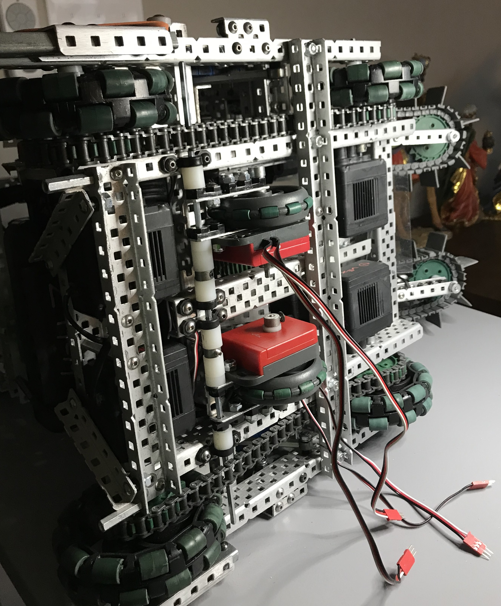
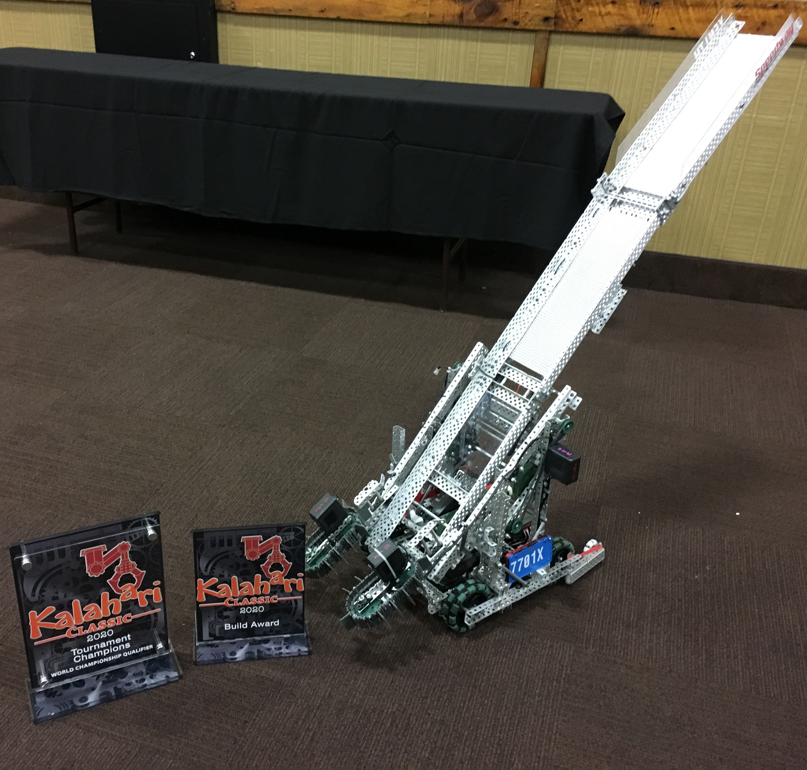
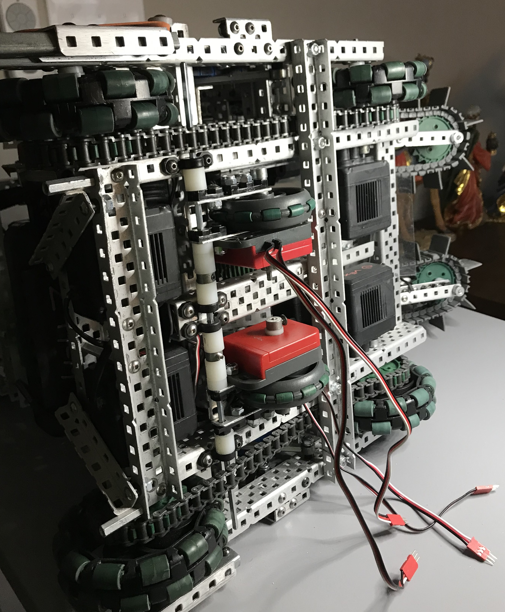
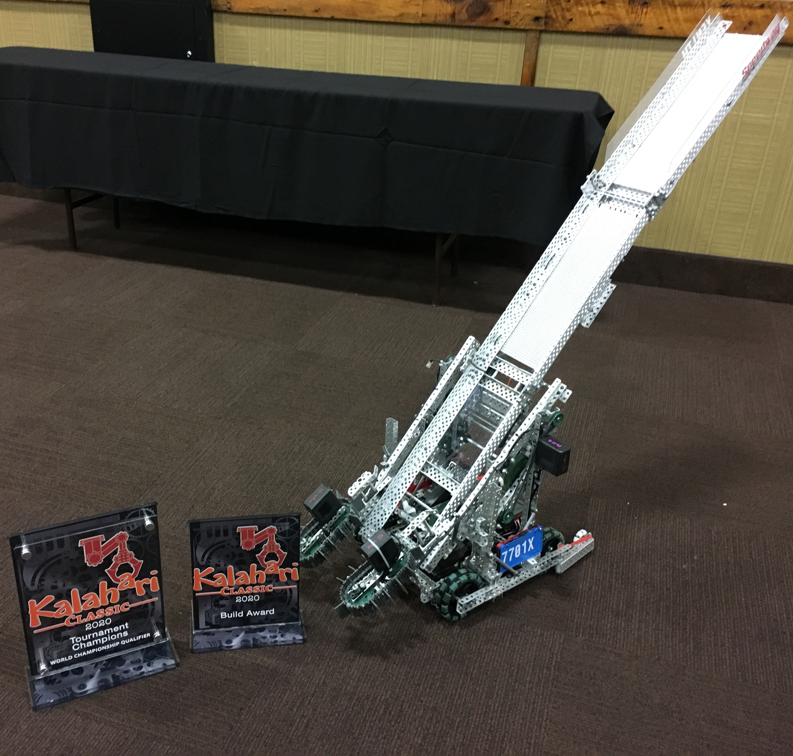

Projects
7701X - Xenith VEX Robotics
I joined our school’s robotics club as a sophomore, a year later than most of my peers, but it quickly became my primary commitment to make up for lost time. My 3 years of experience in VEX Robotics have armed me a toolbox of skills. In VEX, I took on the role of our main chassis assembler and drive coach. Additionally, I gained substantial experience in PID control loops, odometry, and MATLAB, while also leveraging my knowledge in mechanical design and engineering notebooks. This expertise led our team to claim numerous titles including World Championship Divisional 1st place (2x), 2019 1st place World Driver Skills Ranking, VEX Robotics 2020 National Signature Event Tournament Champion, Regional Tournament Champions (8x).
2020
 



The objectives of the 2020 season, Tower Takeover, was to capture cubes and stack them in specified areas as well as score the cubes in towers located around the field. We were able to create a robot that completed all of these tasks efficiently, scoring more points much faster than most if not all of the other teams. We secured 1st place in our division during the 2020 World Championships, ended as divisional finalists, and won the national signature event (the second largest competition in the world).
2019
In the 2019 season, Turning Point, the game entailed pick up and launch balls at acrylic flags to toggle them to a given color, to pick up, flip, and place caps onto raised poles, and climb a platform at the end of the match. Our choices regarding mechanical design and autonomous programming allowed our team to remain undefeated and secure 1st place in our division during the 2019 World Championships.
Materials Model Design
Last summer, I secured a position in the Zdeněk Bažant Material Science lab as an undergraduate researcher. My objective during this period was to design and develop a biaxial test frame to perform fracture analysis on composites like carbon-fibers. This data would be used to determine material properties to better inform manufacturers as composites become increasingly relevant. I also was tasked to machine specimens using mill, lathe, and diamond-edge band saw. These opportunity allowed me to hone my skills in SolidWorks, stress analysis through Abaqus CAE, and also gaining certification for operating shop machinery. Further publications are pending as well.
X - Strap
I am collaborating with Lurie Children’s Hospital to certify an improved infant transportation device that I have developed alongside 2 other students. This system, the X - Strap will replace their aging restraining straps that possess numerous safety flaws. Through a school-wide research and design course during the 2020-2021 school year, our group was the sole team to be selected to continue our partnership with a client.
Microscopy and Image-J
As an intern during the summer of 2017, I was the only freshman to be admitted to Indiana Project STEM out of 100 accepted students. During that summer I worked at Indiana University's Stark Neuroscience Research Center and explored the characterization of Central Amygdala neurons and their potential role in pain-related behavior. In the following summers, I remained in my previous lab where I had established a strong foundation operating confocal microscopes and other wet lab machinery. We are also currently in the final stages of review for a paper that I have co-authored in the Journal of Comparative Neurology.